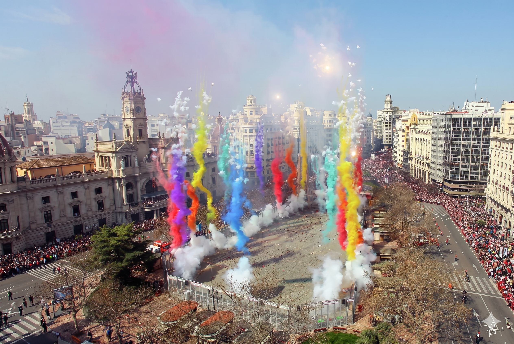
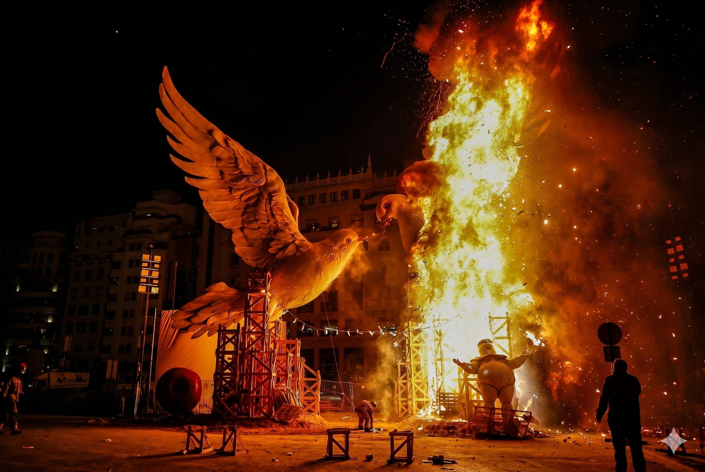
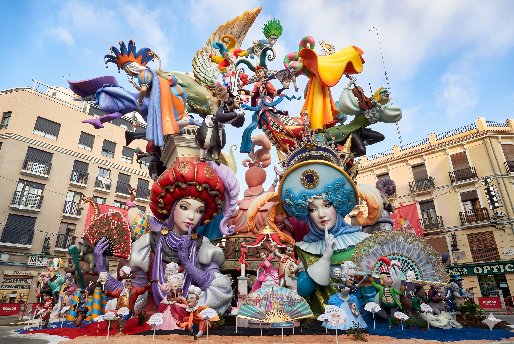

Falla Municipal
El monumento más esperado en la Plaza del Ayuntamiento.

La Mascletà
El estruendo diario que pone en pie a toda Valencia.

La Ofrenda
Miles de flores para la Virgen de los Desamparados.

Nit del Foc
El castillo de fuegos más espectacular del año.

La Cremà
El fuego que cierra la fiesta y abre la primavera.
¿Quieres ver más?
Cada año, fotógrafos de toda Valencia capturan los momentos más impactantes de las Fallas: la luz del fuego, los gestos de los falleros, las flores de la Ofrenda y los detalles imposibles de los monumentos.
Desde la primera Despertà hasta la última chispa de la Cremà, miles de instantes quedan inmortalizados gracias a profesionales y aficionados que comparten su mirada con todos nosotros.
Si nuestra pequeña selección se te ha quedado corta, te invitamos a explorar un archivo mucho más amplio con miles de imágenes de fiestas anteriores.
Ver más fotos